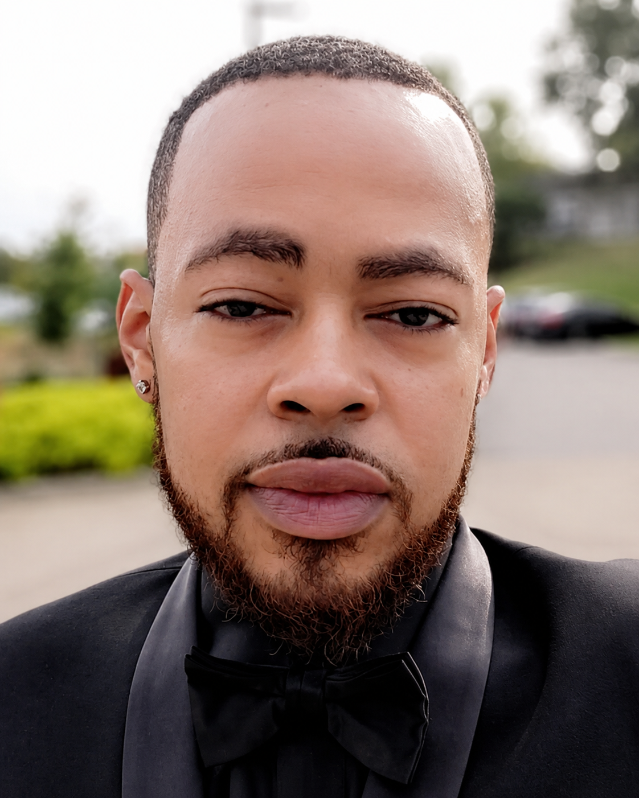
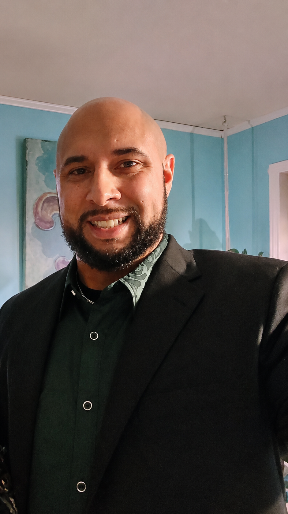
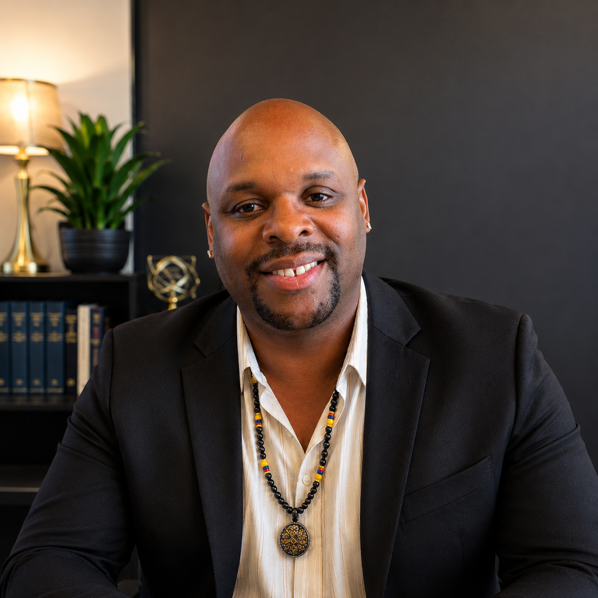
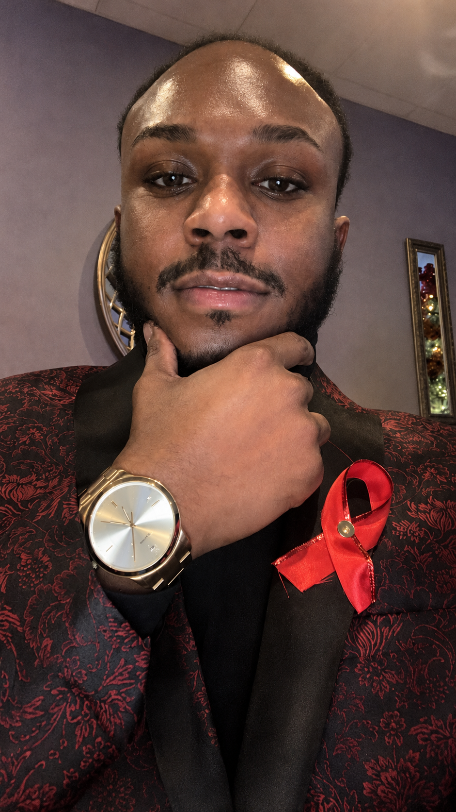

Culturally Affirming
Care that honors identity, lived experience, culture, and the full story each person brings into the room.
Our team brings together clinical experience, community-centered values, education, leadership, and compassionate support to help clients feel seen, heard, and cared for.
Care that honors identity, lived experience, culture, and the full story each person brings into the room.
Support that prioritizes safety, trust, dignity, choice, and steady steps toward healing and resilience.
A team committed to reducing stigma, expanding access, and supporting underserved communities with compassion.
Learn more about the people who support Quantum clients, programs, community initiatives, and day-to-day operations.
Clinical Supervisor
LCPC, LPC
Dr. Lyz Amarillo is a bilingual psychotherapist, clinical supervisor, virtual mental health consultant, and THRIVE evaluator with experience supporting diverse clients and communities.
Behavioral Health Clinician
Ed.D., LPC, NCC
Dr. Ebonie Davis supports adolescents, young adults, families, and school-based initiatives through a holistic, strengths-based approach grounded in empowerment, reflection, and accountability.

Psychiatric Nurse Practitioner
APRN, RN, PMHNP-BC
Abidemi “Abby” Adewoyin is a board-certified Psychiatric-Mental Health Nurse Practitioner who specializes in thoughtful, evidence-based medication management. She works with patients through evaluation, diagnosis, and prescribing when appropriate while making the treatment process clear, collaborative, and supportive.

Behavioral Health Clinician
MS, PLPC
Kendrick Jones provides behavioral health services with a strong commitment to underserved communities, culturally sensitive care, intake support, and reducing barriers to mental health access.

Behavioral Health Clinician
LPC
Justin Alexander provides behavioral health support with a client-centered approach focused on helping individuals navigate life challenges, strengthen emotional wellness, and move toward growth.

Life Transformational Coach
MA, PLPC • Virtual Services
Jonathan McKinney offers a pragmatic and holistic coaching approach rooted in empathy, mindfulness, and lived experience, helping clients reconnect with resilience, purpose, and possibility.
Life Transformational Coach & Intake Coordinator
Coaching & Intake Support
Sharman Williams supports clients from the first point of connection as a life transformational coach and intake coordinator, helping people feel heard, understand next steps, and get connected with appropriate support.

Leadership & Organizational Support
HR Professional & Health Marketing Specialist
Pherren Lewis is an experienced HR professional and health marketing specialist with a focus on behavioral health. His expertise includes recruitment, employee development, training, benefits, payroll, leadership development, and change management.
Known for his collaborative leadership style, Pherren works to build strong teams, improve workplace culture, and support organizational growth. He combines his HR and health marketing experience to help organizations strengthen their workforce and expand impactful behavioral health programs.
Administrative Support
Administrative Support Specialist
Viviana Rodriguez is an Administrative Support Specialist with experience in office administration, business operations, documentation, scheduling, onboarding, and team support. She works closely with staff and leadership to manage administrative tasks, organize information, maintain records, and keep daily operations running smoothly.
Project THRIVE
Prevention Specialist
Demetrius Sims is a Prevention Specialist with experience in client advocacy, case management, community outreach, and resource coordination. He is dedicated to helping individuals navigate challenging situations with professionalism, empathy, and confidentiality.

Project THRIVE
THRIVE Coordinator
Hezekiah Williams is a dynamic and passionate advocate in HIV awareness and support, particularly within Black and Brown LGBTQIA+ communities. With a decade of experience that began in his late teens as a volunteer at The SPOT, his work is rooted in advocacy, education, community building, and lived experience.